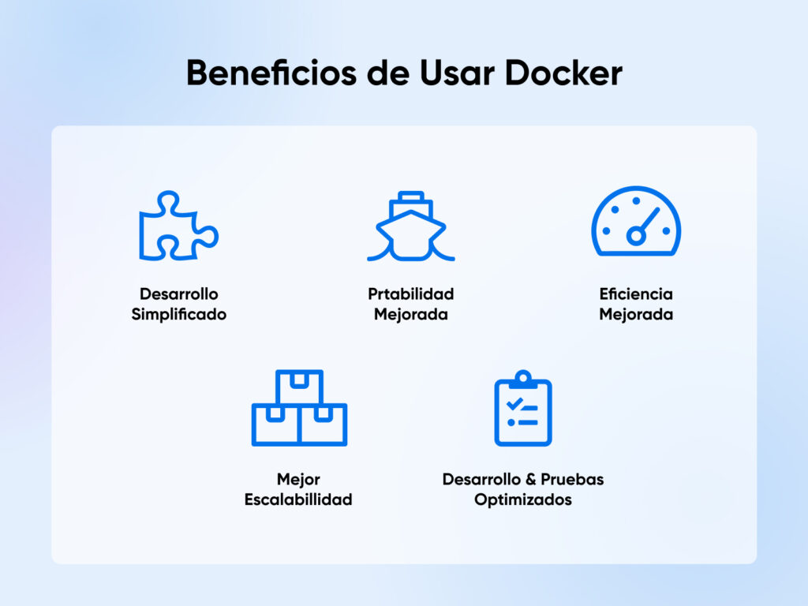

QUINTO NIVEL
ASIGNATURA: APLICACIÓN SISTEMAS OPERATIVOS
NRC: 29321
TALLER GRUPAL – SEGUNDO PARCIAL
“Despliegue de servicios usando Docker”

GRUPO 6
- Alexander Wilfrido Carrion Cañar
- Félix Esteban Narváez Criollo
- Luis Rolando Sangucho Tenorio
- Katherine Gabriela Vargas Chirau
DOCENTE: Ing. Eleana Ines Jerez Villota, MSc
FECHA DE ENTREGA: 01/02/2026